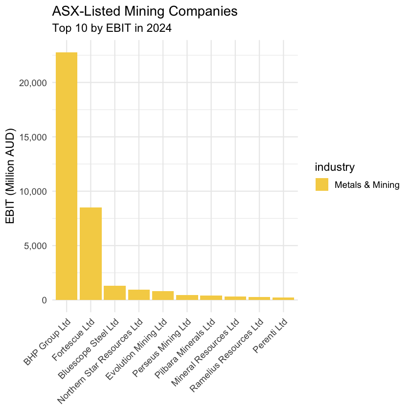
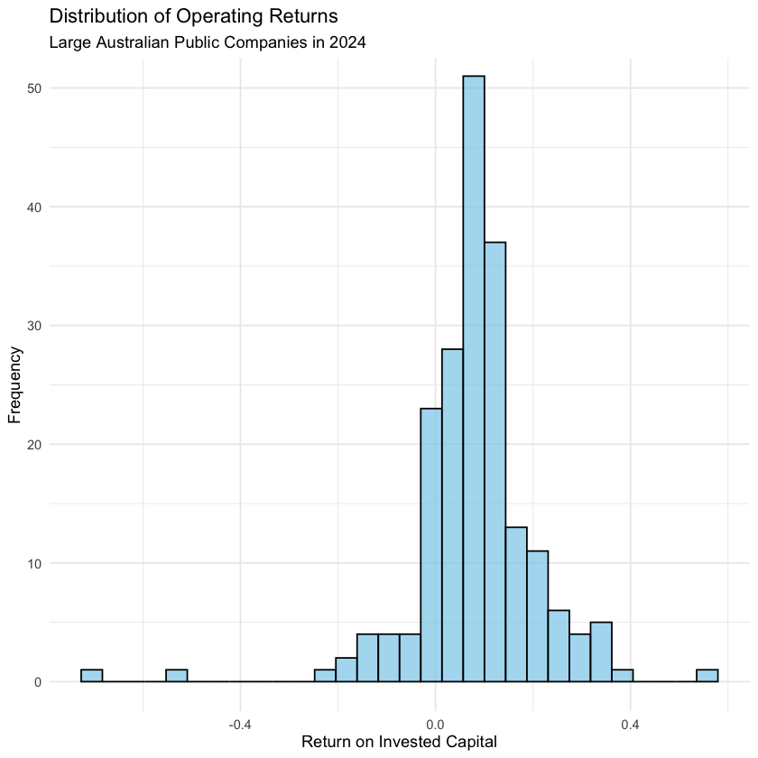
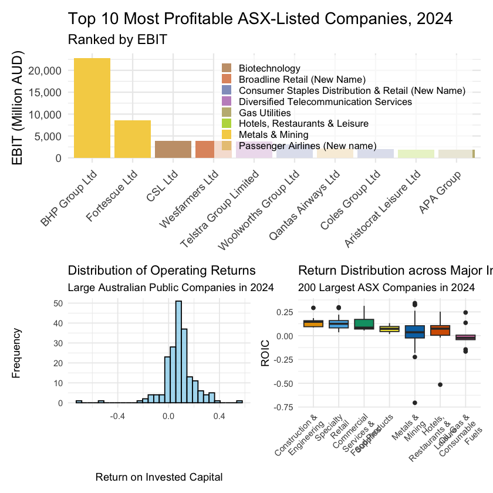

Topic 4.1 - R 数据整理基础¶
1. R 中的管子语法格式¶
在本章开始之前，我们先介绍一下从本章开始要使用的一个重要的 R 语法格式 - 管子 pipes，符号是 |>：
- 管子是 R 语言中改变函数调用方式的一种语法格式，它可以让函数的调用从嵌套式结构变成线性结构，增强代码的可读性
-
如果我们想将对象
A传给函数f()：- 在传统的 R 语法中，我们需要写成
f(A) - 而使用管子语法后，我们可以写成
A |> f()，这样就可以直接从前往后读代码了
- 在传统的 R 语法中，我们需要写成
-
如果是函数嵌套，比方说
f(A)的结果再传给函数g()- 在传统的 R 语法中，我们需要写成
g(f(A)) - 而使用管子语法后，我们可以写成
A |> f() |> g()，这样就可以直接从前往后读代码了
- 在传统的 R 语法中，我们需要写成
比方说我们本节要使用到的一段代码：
- 如果使用嵌套式结构的话，代码是这样的：
t10_all_profits <- slice_head(arrange(asx_200_2024, desc(ebit)), n = 10)
-
这段代码要从里往外去读：
- 首先是
arrange(asx_200_2024, desc(ebit))，它的作用是对asx_200_2024这个数据框按照ebit这个变量进行降序排序 - 然后是
slice_head(..., n = 10)，它的作用是从上一步得到的结果中取出前 10 行
- 首先是
-
但是如果使用管子的话，代码就变成了这样：
t10_all_profits <- asx_200_2024 |>
arrange(desc(ebit)) |>
slice_head(n = 10)
-
这段代码直接从前往后读就可以了：
- 首先是
asx_200_2024，它是我们要处理的数据框 - 然后是
arrange(desc(ebit))，它的作用是对前面得到的数据框按照ebit这个变量进行降序排序 - 最后是
slice_head(n = 10)，它的作用是从上一步得到的结果中取出前 10 行
- 首先是
注意，使用管子后：
- 函数中的第一个参数默认是管子前面代码的结果，但是其他的参数还是不能够省略的
- 比如
slice_head()函数中的n = 10就不能省略，否则 R 就不知道我们要取出多少行了
2. 数据筛选与排序¶
在 R 的 dplyr 包中，数据的筛选和排序是非常常见的操作，包括的函数有以下一些：
filter()函数：用于根据条件筛选数据框中的行，里面的参数是包括列名的条件表达式arrange()函数：用于根据一个或多个变量对数据框进行排序，里面的参数是列名，默认是升序排序，如果要降序排序需要在列名前加上desc()slice_head()函数：用于从数据框的开头取出指定数量的行，里面的参数是n = 数字，通常与arrange()函数一起使用，来取出排序后的前几行数据
我们在本节中会使用到这些函数来对 ASX 200 的数据进行筛选和排序，做完成以下三个任务：
- 找出矿产行业 EBIT 最高的前 10 家公司的名称和 EBIT 数值
- 找出非矿产行业 EBIT 最高的前 10 家公司的名称和 EBIT 数值
- 找出所有公司的 EBIT 最高的前 10 家公司的名称和 EBIT 数值
首先我们导入包和数据：
library(tidyverse) # Load the tidyverse for data manipulation and visualisation
library(scales) # Load scales for axis formatting and transformations
library(ggokabeito) # Load ggokabeito for a colour-blind-friendly palette (available if you choose to use it)
library(ggthemes) # Load ggthemes for additional polished ggplot themes
library(patchwork) # Load patchwork to combine multiple ggplots into one figure
library(stringr) # Load stringr for consistent string manipulation helpers
library(RColorBrewer) # Load RColorBrewer for qualitative and sequential colour palettes
options(tibble.width = Inf)
asx_200_2024 <- read_csv("asx_200_2024.csv")
asx_200_2024 |> head()
| gvkey <chr> | curcd <chr> | fyear <dbl> | fyr <dbl> | datadate <chr> | at <dbl> | capx <dbl> | shareequity <dbl> | dlc <dbl> | dltt <dbl> | dvp <dbl> | ebit <dbl> | netprofit <dbl> | pstk <dbl> | sale <dbl> | epsexcon <dbl> | nicon <dbl> | conm <chr> | fic <chr> | conml <chr> | ggroup <dbl> | gind <dbl> | gsector <dbl> | gsubind <dbl> | sector <chr> | indgroup <chr> | industry <chr> | subind <chr> | debt <dbl> | invested_capital <dbl> |
|-------------|-------------|-------------|-----------|----------------|----------|------------|-------------------|-----------|------------|-----------|------------|-----------------|------------|------------|----------------|-------------|-----------------------|-----------|-----------------------|--------------|------------|---------------|---------------|------------------------|-------------------------------------------------------|-------------------------------------------------------|---------------------------------------|------------|------------------------|
| 013312 | USD | 2024 | 6 | 6/30/2024 | 102362 | 9273 | 49120 | 2084 | 18634 | NA | 22771 | 9601 | 0 | 55658 | 1.5582 | 7897 | BHP GROUP LTD | AUS | BHP Group Ltd | 1510 | 151040 | 15 | 15104020 | Materials | Materials | Metals & Mining | Diversified Metals & Mining | 20718 | 69838 |
| 210216 | AUD | 2024 | 6 | 6/30/2024 | 45550 | 2288 | 17352 | 4228 | 12740 | NA | 3712 | 1788 | 0 | 22928 | 0.1405 | 1622 | TELSTRA GROUP LIMITED | AUS | Telstra Group Limited | 5010 | 501010 | 50 | 50101020 | Communication Services | Telecommunication Services | Diversified Telecommunication Services | Integrated Telecommunication Services | 16968 | 34320 |
| 223003 | USD | 2024 | 6 | 6/30/2024 | 38022 | 849 | 19401 | 944 | 11239 | NA | 3896 | 2714 | 0 | 14690 | 5.4699 | 2642 | CSL LTD | AUS | CSL Ltd | 3520 | 352010 | 35 | 35201010 | Health Care | Pharmaceuticals, Biotechnology & Life Sciences | Biotechnology | Biotechnology | 12183 | 31584 |
| 212650 | AUD | 2024 | 6 | 6/30/2024 | 36694 | 104 | 11678 | 1590 | 18596 | NA | 1132 | 376 | 0 | 4119 | 0.1055 | 326 | TRANSURBAN GROUP | AUS | Transurban Group | 2030 | 203050 | 20 | 20305020 | Industrials | Transportation | Transportation Infrastructure | Highways & Railtracks | 20186 | 31864 |
| 100894 | AUD | 2024 | 6 | 6/30/2024 | 33936 | 2548 | 5570 | 2311 | 14411 | NA | 3100 | 117 | 0 | 67922 | 0.0885 | 108 | WOOLWORTHS GROUP LTD | AUS | Woolworths Group Ltd | 3010 | 301010 | 30 | 30101030 | Consumer Staples | Consumer Staples Distribution & Retail (New Name) | Consumer Staples Distribution & Retail (New Name) | Food Retail | 16722 | 22292 |
| 212427 | USD | 2024 | 6 | 6/30/2024 | 30060 | 2834 | 19531 | 192 | 5208 | NA | 8520 | 5664 | 0 | 18220 | 1.8476 | 5683 | FORTESCUE LTD | AUS | Fortescue Ltd | 1510 | 151040 | 15 | 15104050 | Materials | Materials | Metals & Mining | Steel | 5400 | 24931 |
(1) 数据筛选与排序 - 矿产行业前 10 家公司¶
这里，我们数据的筛选逻辑是，我们先从 ASX 200 的数据中筛选出矿产行业的公司，然后在这个基础上按照 EBIT 这个变量进行降序排序，并取出前 10 行数据：
t10_mining_profits <- asx_200_2024 |>
filter(industry == "Metals & Mining") |> # 筛选出矿产行业的公司
arrange(desc(ebit)) |> # 按照 EBIT 进行降序排序
slice_head(n = 10) # 取出前 10 行数据
t10_mining_profits
| gvkey <chr> | curcd <chr> | fyear <dbl> | fyr <dbl> | datadate <chr> | at <dbl> | capx <dbl> | shareequity <dbl> | dlc <dbl> | dltt <dbl> | dvp <dbl> | ebit <dbl> | netprofit <dbl> | pstk <dbl> | sale <dbl> | epsexcon <dbl> | nicon <dbl> | conm <chr> | fic <chr> | conml <chr> | ggroup <dbl> | gind <dbl> | gsector <dbl> | gsubind <dbl> | sector <chr> | indgroup <chr> | industry <chr> | subind <chr> | debt <dbl> | invested_capital <dbl> |
|-------------|-------------|-------------|-----------|----------------|------------|------------|-------------------|-----------|------------|-----------|------------|-----------------|------------|------------|----------------|-------------|------------------------|-----------|-----------------------------|--------------|------------|---------------|---------------|--------------|----------------|---------------------|---------------------------------|------------|------------------------|
| 013312 | USD | 2024 | 6 | 6/30/2024 | 102362.000 | 9273.000 | 49120.000 | 2084.000 | 18634.000 | NA | 22771.000 | 9601.000 | 0 | 55658.000 | 1.5582 | 7897.000 | BHP GROUP LTD | AUS | BHP Group Ltd | 1510 | 151040 | 15 | 15104020 | Materials | Materials | Metals & Mining | Diversified Metals & Mining | 20718.000 | 69838.000 |
| 212427 | USD | 2024 | 6 | 6/30/2024 | 30060.000 | 2834.000 | 19531.000 | 192.000 | 5208.000 | NA | 8520.000 | 5664.000 | 0 | 18220.000 | 1.8476 | 5683.000 | FORTESCUE LTD | AUS | Fortescue Ltd | 1510 | 151040 | 15 | 15104050 | Materials | Materials | Metals & Mining | Steel | 5400.000 | 24931.000 |
| 252290 | AUD | 2024 | 6 | 6/30/2024 | 15678.000 | 963.300 | 11285.500 | 190.800 | 530.700 | NA | 1303.600 | 947.200 | 0 | 17055.300 | 1.7976 | 804.700 | BLUESCOPE STEEL LTD | AUS | Bluescope Steel Ltd | 1510 | 151040 | 15 | 15104050 | Materials | Materials | Metals & Mining | Steel | 721.500 | 12007.000 |
| 259625 | AUD | 2024 | 6 | 6/30/2024 | 13080.800 | 1440.000 | 8790.900 | 152.400 | 1191.900 | NA | 961.800 | 638.500 | 0 | 4921.200 | 0.5561 | 638.500 | NTHN STAR RES LTD | AUS | Northern Star Resources Ltd | 1510 | 151040 | 15 | 15104030 | Materials | Materials | Metals & Mining | Gold | 1344.300 | 10135.200 |
| 253350 | AUD | 2024 | 6 | 6/30/2024 | 8818.841 | 918.269 | 4142.196 | 126.527 | 1892.547 | NA | 824.861 | 422.269 | 0 | 3215.832 | 0.2202 | 422.269 | EVOLUTION MINING LTD | AUS | Evolution Mining Ltd | 1510 | 151040 | 15 | 15104030 | Materials | Materials | Metals & Mining | Gold | 2019.074 | 6161.270 |
| 271326 | USD | 2024 | 6 | 6/30/2024 | 1985.786 | 121.283 | 1779.976 | 1.699 | 1.521 | NA | 462.231 | 364.755 | 0 | 1025.799 | 0.2362 | 324.281 | PERSEUS MINING LTD | AUS | Perseus Mining Ltd | 1510 | 151040 | 15 | 15104030 | Materials | Materials | Metals & Mining | Gold | 3.220 | 1783.196 |
| 286945 | AUD | 2024 | 6 | 6/30/2024 | 4309.245 | 810.001 | 3244.169 | 135.773 | 419.970 | NA | 396.252 | 256.883 | 0 | 1254.118 | 0.0854 | 256.883 | PILBARA MINERALS LTD | AUS | Pilbara Minerals Ltd | 1510 | 151040 | 15 | 15104020 | Materials | Materials | Metals & Mining | Diversified Metals & Mining | 555.743 | 3799.912 |
| 205194 | AUD | 2024 | 6 | 6/30/2024 | 12232.000 | 4133.000 | 3584.000 | 255.000 | 5081.000 | NA | 319.000 | 114.000 | 0 | 5278.000 | 0.6396 | 125.000 | MINERAL RESOURCES LTD | AUS | Mineral Resources Ltd | 1510 | 151040 | 15 | 15104020 | Materials | Materials | Metals & Mining | Diversified Metals & Mining | 5336.000 | 8920.000 |
| 256406 | AUD | 2024 | 6 | 6/30/2024 | 1593.948 | 123.149 | 1329.128 | 9.078 | 1.389 | NA | 265.971 | 216.582 | 0 | 882.572 | 0.1953 | 216.582 | RAMELIUS RESOURCES LTD | AUS | Ramelius Resources Ltd | 1510 | 151040 | 15 | 15104030 | Materials | Materials | Metals & Mining | Gold | 10.467 | 1339.595 |
| 210805 | AUD | 2024 | 6 | 6/30/2024 | 3355.798 | 335.154 | 1788.383 | 17.115 | 911.489 | NA | 240.630 | 107.165 | 0 | 3342.020 | 0.1085 | 95.476 | PERENTI LTD | AUS | Perenti Ltd | 1510 | 151040 | 15 | 15104020 | Materials | Materials | Metals & Mining | Diversified Metals & Mining | 928.604 | 2716.987 |
接下来，我们准备在 ggplot2 中将前10家矿产公司的 EBIT 进行可视化，在此之前，我们先做一个准备工作，也为后续的小节做准备，就是给不同行业分配一下颜色：
- 首先，我们用一个变量
industry_levels来存储数据表中的所有行业
industry_levels <- asx_200_2024$industry |> # 获取数据表中行业这一列提取为一个向量
unique() |> # 获取这个向量的唯一值，也就是去重的操作
sort() # 对这个唯一值进行排序，得到一个有序的行业列表
industry_levels
1. 'Aerospace & Defense'
2. 'Air Freight & Logistics'
3. 'Automobile Components (New Name)'
4. 'Beverages'
5. 'Biotechnology'
...
40. 'Real Estate Management & Development (New Code)'
41. 'Software'
42. 'Specialty Retail'
43. 'Trading Companies & Distributors'
44. 'Transportation Infrastructure'
- 之后，我们使用
setNames()函数来创建一个命名的颜色向量industry_colors，它的名字是行业名称，值是对应的颜色，这样我们在后续的可视化中就可以直接使用这个颜色向量来给不同行业分配颜色了
industry_colors <- setNames( # 将下面的颜色向量和行业名称进行配对，创建一个命名的颜色向量
colorRampPalette(RColorBrewer::brewer.pal(8, "Set2"))(length(industry_levels)), # 使用 RColorBrewer 的 Set2 调色板生成的颜色代号
industry_levels # 行业名称
)
industry_colors
Aerospace & Defense: "#66C2A5"
Air Freight & Logistics: "#7EB99A"
Automobile Components (New Name): "#96B08F"
Beverages: "#AFA884"
Biotechnology: "#C79F79"
...
Real Estate Management & Development (New Code): "#D3BE9E"
Software: "#CBBBA3"
Specialty Retail: "#C3B8A8"
Trading Companies & Distributors: "#BBB5AD"
Transportation Infrastructure: "#B3B3B3"
接下来，我们还得再做一个准备工作，才能开始画柱状图，那就是给公司名称一个顺序，让柱状图按照 EBIT 从高到低的顺序排列：
t10_mining_profits <- t10_mining_profits |>
mutate(conml = reorder(conml, -ebit))
- 在这段代码中，我们使用
mutate()函数来将conml这列从字符型character改为了因子型factor - 字符型和因子型都可以表示类别的概念，但是因子型是可以指定类别顺序的，而字符型是没有顺序的，或者说除了字典序之外没有其他的顺序了
- 在
reorder()函数中，我们指定了conml这个变量按照ebit这个变量进行排序，并且是降序排序（因为前面加了一个负号），这样在后续的柱状图中，公司的名称就会按照 EBIT 从高到低的顺序排列了 - 注意，我们这里并没有将数据框进行排序，而是给公司名称一个可比较的顺序，这样在后续的柱状图中就可以按照这个顺序来排列了
之后，我们就可以使用 ggplot2 来画柱状图了，其中的图像修饰代码我们就直接在注释里解释了：
# 定义图像
bar_plot_mine <- t10_mining_profits |>
ggplot(aes(x = conml, y = ebit, fill = industry)) +
# 柱状图使用的是 geom_bar 函数，其中 stat = "identity" 是强调直接使用数据中的数值来绘制柱子的高度，否则是像直方图那样根据数据的频数来绘制柱子高度的
geom_bar(stat = "identity") +
# 使用自定义的行业颜色调色板，scale_fill_manual() 函数的作用是告诉 ggplot2 使用我们指定的颜色来填充柱子，而不是默认的颜色，这样每个行业就会有一个独特的颜色，便于区分
scale_fill_manual(values = industry_colors) +
# 设置图表的标题和轴标签
labs(
x = NULL,
y = "EBIT (Million AUD)",
title = "ASX-Listed Mining Companies",
subtitle = "Top 10 by EBIT in 2024"
) +
# y 轴的数值格式化为带有逗号分隔的形式，这样当数值较大时更容易阅读，例如 1000000 会显示为 1,000,000
scale_y_continuous(labels = scales::comma) +
# 默认主题设置为 `theme_minimal()`，并且将基础字体大小设置为 14，这样设置后，主标题大小为 14，副标题大小为 12，轴标题大小为 12，轴文本大小为 10，这样整体的字体大小就比较协调了
theme_minimal(base_size = 14) +
# 主题中调整 x 轴文本的角度为 45 度，并且设置水平对齐方式为 1（右对齐），这样可以避免公司名称过长时重叠在一起
theme(axis.text.x = element_text(angle = 45, hjust = 1))
# 显示图像
bar_plot_mine

(2) 数据筛选与排序 - 非矿产行业前 10 家公司¶
我们按照同样的逻辑来筛选非矿产行业 EBIT 最高的前 10 家公司：
# 创建一个新的数据框 `t10_other_profits`，包含 ASX 200 中除了矿产行业以外的公司，并且按照 EBIT 降序排列，保留前 10 行数据
t10_other_profits <- asx_200_2024 |>
# 选择除了矿产行业以外的公司
filter(industry != "Metals & Mining") |>
# 按 EBIT 降序排列
arrange(desc(ebit)) |>
# 保留前 10 行
slice_head(n = 10)
# 将公司名称改为因子类型，并强调 EBIT 的降序为因子顺序
t10_other_profits <- t10_other_profits |>
mutate(conml = reorder(conml, -ebit))
# 定义图像
bar_plot_other <- t10_other_profits |>
ggplot(aes(x = conml, y = ebit, fill = industry)) +
# 柱状图
geom_bar(stat = "identity") +
# 使用自定义的行业颜色调色板
scale_fill_manual(values = industry_colors) +
# 设置图表的标题和轴标签
labs(
x = NULL,
y = "EBIT (Million AUD)",
title = "ASX-Listed Non-Mining Companies",
subtitle = "Top 10 by EBIT in 2024"
) +
# y 轴的数值格式化为带有逗号分隔的形式
scale_y_continuous(labels = scales::comma) +
# 默认主题设置为 `theme_minimal()`，并且将基础字体大小设置为 14
theme_minimal(base_size = 14) +
# 主题中做以下调整：
theme(
axis.text.x = element_text(angle = 45, hjust = 1), # 调整 x 轴文本的角度为 45 度，并且设置水平对齐方式为 1（右对齐）
legend.position = c(0.98, 0.98), # 将图例放置在图表的右上角，使用坐标 (0.98, 0.98) 来微调位置，意思是距离顶端空2%，距离右侧空2%
legend.justification = c("right", "top"), # 设置图例的对齐方式为右上对齐
legend.title = element_blank(), # 去掉图例的标题
legend.text = element_text(size = 10), # 设置图例文本的字体大小为 10
legend.background = element_rect(fill = scales::alpha("white", 0.7), color = NA), # 设置图例背景为半透明的白色，并且去掉边框
legend.key.size = grid::unit(0.4, "cm"), # 设置图例键的大小为 0.4 厘米
legend.spacing.y = grid::unit(0.1, "cm") # 设置图例键之间的垂直间距为 0.1 厘米
)
# 显示图像
bar_plot_other

(3) 数据筛选与排序 - 所有公司前 10 家公司¶
按照相同的逻辑，我们来筛选所有公司 EBIT 最高的前 10 家公司：
# 筛选所有公司 EBIT 最高的前 10 家公司，这里就没有按行业筛选的操作了
t10_all_profits <- asx_200_2024 |>
# 按照 EBIT 进行降序排序
arrange(desc(ebit)) |>
# 保留前 10 行数据
slice_head(n = 10)
# 将公司名称改为因子类型，并强调 EBIT 的降序为因子顺序
t10_all_profits <- t10_all_profits |>
mutate(conml = reorder(conml, -ebit))
# 定义图像
bar_plot_all <- t10_all_profits |>
ggplot(aes(x = conml, y = ebit, fill = industry)) +
# 柱状图
geom_bar(stat = "identity") +
# 使用自定义的行业颜色调色板
scale_fill_manual(values = industry_colors) +
# 设置图表的标题和轴标签
labs(
x = NULL,
y = "EBIT (Million AUD)",
title = "Top 10 Most Profitable ASX-Listed Companies, 2024",
subtitle = "Ranked by EBIT"
) +
# y 轴的数值格式化为带有逗号分隔的形式
scale_y_continuous(labels = scales::comma) +
# 默认主题设置为 `theme_minimal()`，并且将基础字体大小设置为 14
theme_minimal(base_size = 14) +
# 在主题中做以下调整：
theme(
axis.text.x = element_text(angle = 45, hjust = 1), # 调整 x 轴文本的角度为 45 度，并且设置水平对齐方式为 1（右对齐）
legend.position = c(0.98, 0.98), # 将图例放置在图表的右上角，使用坐标 (0.98, 0.98) 来微调位置，意思是距离顶端空2%，距离右侧空2%
legend.justification = c("right", "top"), # 设置图例的对齐方式为右上对齐
legend.title = element_blank(), # 去掉图例的标题
legend.text = element_text(size = 10), # 设置图例文本的字体大小为 10
legend.background = element_rect(fill = scales::alpha("white", 0.7), color = NA), # 设置图例背景为半透明的白色，并且去掉边框
legend.key.size = grid::unit(0.4, "cm"), # 设置图例键的大小为 0.4 厘米
legend.spacing.y = grid::unit(0.1, "cm") # 设置图例键之间的垂直间距为 0.1 厘米
)
# 显示图像
bar_plot_all

3. 数据框中的列操作¶
对于数据框中的列操作，我们这里介绍两个主要的函数：
mutate()函数：用于对数据框中的列进行修改或者创建新的列，里面的参数是新的列名 = 计算表达式形式，其中计算表达式可以使用数据框中已有的列来进行计算select()函数：用于对因子型变量进行重新排序，里面的参数是列名，按照指定的列名顺序来重新排列数据框中的列
我们接下来在以下任务中练习这两个函数：
-
创建一个子数据框
return- 先筛选
invested_capital大于 0 的公司，因为我们后续要计算投资回报率，如果invested_capital小于等于 0 的话，投资回报率就没有意义了 - 再新建一个新列，投资回报率：
roic = ebit / invested_capital
- 先筛选
-
之后我们再按照投资回报率
roic这个变量进行降序排序，并且取出前 10 行数据，只展示fyear、conml、roic、ebit、invested_capital这几列 -
最后，我们画一个直方图，展示
roic这个变量的分布情况
首先，我们来创建一个子数据框 return，在这个数据框中，我们先筛选 invested_capital 大于 0 的公司，然后再新建一个新列，投资回报率 roic：
returns <- asx_200_2024 |>
# 筛选出投资资本大于 0 的公司，因为只有这些公司才能计算 ROIC
filter(invested_capital > 0) |>
# 计算 ROIC，ROIC 的计算公式是 EBIT 除以投资资本
mutate(roic = ebit / invested_capital)
之后，我们创建一个新的数据框 t10_roic，在这个数据框中，我们按照投资回报率 roic 这个变量进行降序排序，并且取出前 10 行数据，只展示 fyear、conml、roic、ebit、invested_capital 这几列：
returns_top10 <- returns |>
# 按照投资回报率 roic 这一列进行降序排序
arrange(desc(roic)) |>
# 取出前 10 行数据
slice_head(n = 10) |>
# 只保留 fyear、conml、roic、ebit、invested_capital 这几列
select(fyear, conml, roic, ebit, invested_capital)
returns_top10
| fyear <dbl> | conml <chr> | roic <dbl> | ebit <dbl> | invested_capital <dbl> |
|-------------|----------------------|------------|------------|------------------------|
| 2024 | Data3 Ltd | 0.5575274 | 53.250 | 95.511 |
| 2024 | REA Group Ltd | 0.3823118 | 711.100 | 1860.000 |
| 2024 | Fortescue Ltd | 0.3417432 | 8520.000 | 24931.000 |
| 2024 | Technology One Ltd | 0.3340586 | 146.628 | 438.929 |
| 2024 | BHP Group Ltd | 0.3260546 | 22771.000 | 69838.000 |
| 2024 | Capricorn Metals Ltd | 0.3220108 | 126.671 | 393.375 |
| 2024 | Qantas Airways Ltd | 0.3192447 | 2198.000 | 6885.000 |
| 2024 | Mader Group Ltd | 0.3130513 | 72.014 | 230.039 |
| 2024 | Lovisa Holdings Ltd | 0.2973008 | 130.620 | 439.353 |
| 2024 | Symal Group Limited | 0.2918404 | 55.281 | 189.422 |
接下来，我们来画一个直方图，展示 roic 这个变量的分布情况：
histogram <- returns |>
ggplot(aes(x = roic)) +
# 直方图使用 geom_histogram 函数，设置填充颜色为 skyblue，边框颜色为 black，透明度为 0.7，并且将 bin 的数量设置为 30，这样可以更好地展示 ROIC 的分布情况
geom_histogram(fill = "skyblue", color = "black", alpha = 0.7, bins = 30) +
# 添加标签和标题
labs(
x = "Return on Invested Capital",
y = "Frequency",
title = "Distribution of Operating Returns",
subtitle = "Large Australian Public Companies in 2024"
) +
# 默认主题使用 theme_minimal()
theme_minimal() +
# 限制 y 轴范围为 0–50，但不丢失数据
coord_cartesian(ylim = c(0, 50))
# 显示直方图
histogram

4. 数据分组统计¶
数据分组统计，其实就是我们常说的计算均值、方差、标准差等统计量，只不过我们此时不是在整个数据框上计算这些指标，而是在每一组内计算这些指标。
数据分组统计会用到以下两个重要函数：
group_by()函数：用于对数据框进行分组，里面的参数是列名，按照指定的列名来进行分组-
summarise()函数：用于对分组后的数据框进行统计计算，里面的参数是指标名 = 计算表达式形式，其中计算表达式包括：n()：计算每个分组的样本量mean(列名)：计算指定列的均值var(列名)：计算指定列的方差sd(列名)：计算指定列的标准差median(列名)：计算指定列的中位数min(列名)：计算指定列的最小值max(列名)：计算指定列的最大值
这两个函数经常是一起使用的：
- 首先使用
group_by()函数对数据框进行分组，按照指定的列名来进行分组，然后使用summarise()函数对分组后的数据框进行统计计算，计算出我们想要的指标 - 如果只使用
group_by()函数的话，得到的结果只是一个和原来数据框一模一样的数据框，只不过 R 会记住，这个数据框有个分组的属性，是按照某一列来分组的 - 之后，
summarise()函数计算的结果是一个新的数据框，其中的每一行对应一个分组，每一列对应一个指标
我们首先来看一个例子，我们在上一节的 returns 数据框中，先按照行业来分组，之后计算每个行业中有多少个公司：
returns_summary_obs <- returns |>
# 按照行业进行分组
group_by(industry) |>
# 计算每个行业的观测值数量
summarise(obs = n()) |>
# 按照观测值数量从多到少排序
arrange(desc(obs))
returns_summary_obs
| industry <chr> | obs <int> |
|-------------------------------------------------------|-----------|
| Metals & Mining | 42 |
| Specialty Retail | 14 |
| Construction & Engineering | 11 |
| Hotels, Restaurants & Leisure | 11 |
| Oil, Gas & Consumable Fuels | 9 |
| ... | ... |
| Gas Utilities | 1 |
| Independent Power and Renewable Electricity Producers | 1 |
| Multi-Utilities | 1 |
| Pharmaceuticals | 1 |
| Real Estate Management & Development (New Code) | 1 |
我们再来看一个例子，这时我们只关注几个主要的行业，来看看这些行业的投资回报率 roic 的均值与标准差：
# 定义一个包含主要行业名称的向量
big_industries <- c(
"Metals & Mining",
"Specialty Retail",
"Construction & Engineering",
"Hotels, Restaurants & Leisure",
"Oil, Gas & Consumable Fuels",
"Commercial Services & Supplies",
"Food Products"
)
# 分组统计每个行业的投资回报率均值与标准差，并且按照均值从高到低排序
returns_summary_stats <- returns |>
# 只保留选定行业的行
filter(industry %in% big_industries) |>
# 按行业分组
group_by(industry) |>
# 计算每个行业的投资回报率均值与标准差
summarise(
ave_roic = mean(roic, na.rm = TRUE) |> round(4), # 计算投资回报率的均值，并且保留四位小数
sd_roic = sd(roic, na.rm = TRUE) |> round(4) # 计算投资回报率的标准差，并且保留四位小数
) |>
# 按照均值从高到低排序
arrange(desc(ave_roic))
# 显示统计结果
returns_summary_stats
| industry <chr> | ave_roic <dbl> | sd_roic <dbl> |
|------------------------------------|----------------|---------------|
| Construction & Engineering | 0.1442 | 0.0597 |
| Specialty Retail | 0.1400 | 0.0810 |
| Commercial Services & Supplies | 0.1332 | 0.0950 |
| Food Products | 0.0714 | 0.0413 |
| Metals & Mining | 0.0357 | 0.1770 |
| Hotels, Restaurants & Leisure | 0.0349 | 0.2012 |
| Oil, Gas & Consumable Fuels | -0.0028 | 0.1270 |
除此之外，我们还可以使用箱式图来展示不同行业的投资回报率 roic 的分布情况：
returns_big_industries <- returns |>
# 只保留选定行业的行
filter(industry %in% big_industries) |>
# 将行业名称设置为因子类型，并且按照均值从高到低
mutate(industry = factor(industry, levels = returns_summary_stats$industry))
box_plot <- returns_big_industries |>
# 绘制箱式图，x 轴是行业，y 轴是投资回报率 roic，填充颜色根据行业进行区分
ggplot(aes(x = industry, y = roic, fill = industry)) +
# 使用 geom_boxplot 函数绘制箱式图，并且去掉图例
geom_boxplot(show.legend = FALSE) +
# 使用色盲友好调色板
scale_fill_okabe_ito() +
# 设置图表的标题和轴标签
labs(
x = NULL,
y = "ROIC",
title = "Return Distribution across Major Industries",
subtitle = "200 Largest ASX Companies in 2024"
) +
# 默认主题使用 theme_minimal()
theme_minimal() +
# 主题中设置以下调整：调整 x 轴文本的角度为 45 度，并且设置水平对齐方式为 1（右对齐）
theme(axis.text.x = element_text(angle = 45, hjust = 1)) +
# 允许 x 轴标签换行，设置每行最多显示 15 个字符，这样当行业名称过长时可以自动换行，避免重叠在一起
scale_x_discrete(labels = scales::label_wrap(15))
# 显示箱式图
box_plot

5. 本节分析结果汇总¶
这里我们将本节我们绘制的三张图放在一起展示：
(bar_plot_all) /
(histogram | box_plot)
